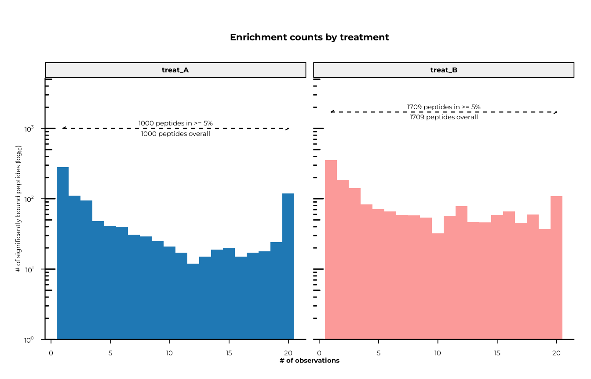
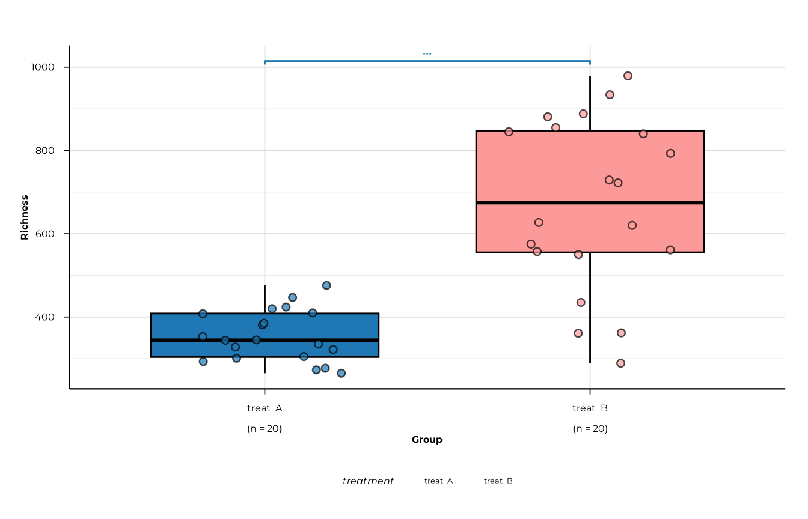
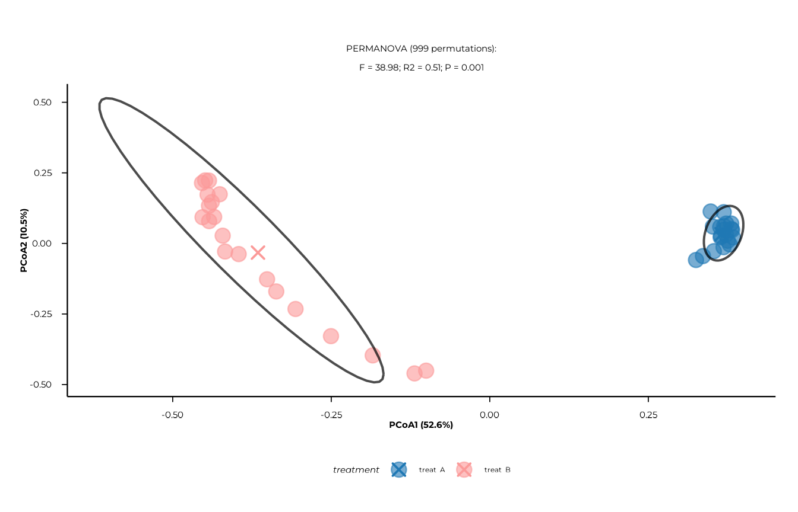

General idea
This tutorial is supposed to provide an exemplary workflow for a
cross-sectional analysis of unpaired PhIP-Seq data using the
phiper package. It’s supposed to serve as a railing along
phiper’s individual modules to help you get started. It’s
not meant as a comprehensive collection of all features.
For instructions to install phiper, please consult the
documentation.
phiper’s modules are explained in detail on their own
documentation pages, linked here where appropriate. All of
phiper’s functions also come with their own help page, so
please call ?function_name for focused usage
instructions.
We provide a dummy dataset for you to play with and we use it here to
showcase phiper’s analysis and plotting functions.
Load packages
You will want to start by loading the necessary packages.
phiperio handles input/output of phiper-related data, while
phiper contains functions for analysis and plotting. We
also use dplyr and ggplot2 here for quality of
life.
Load data
Next, you will need to load your data. There are different ways to do
this. For details, please consult phiperio’s Github repository.
For this tutorial we assume that you have received a set of
.csv files (one for each sample), containing a list of
enriched peptides.
Note that peptides which didn’t show enrichment within a sample will
not be listed in that sample’s .csv file.
Please save the entire set of .csv files that you want
to load into one folder. Then phiperio’s
convert_standard() can batch-import them into a
phip-data object. convert_standard() can also
be used to load a .parquet file.
For this tutorial, we have prepared a dummy dataset bundled with the package. Load it like so:
vig_dir <- system.file("extdata/typical-workflow", package = "phiper")
pd <- convert_standard(
data_long_path = file.path(vig_dir, "enrichment_files"),
peptide_id = "ID", # column in the .csv files for peptide IDs
sample_id_from_filenames = TRUE, # use file names as sample IDs
auto_expand = TRUE # expand to include all library peptides
)
#> [15:36:43] INFO Constructing <phip_data> object
#> -> create_data()
#> [15:36:43] INFO Fetching peptide metadata library via get_peptide_library()
#> [15:36:43] INFO Retrieving peptide metadata into DuckDB cache
#> -> get_peptide_library(force_refresh = FALSE)
#> [15:36:43] INFO Opened DuckDB connection
#> - cache dir:
#> /home/runner/.cache/R/phiperio/peptide_meta/phip_cache.duckdb
#> - table: peptide_meta
#> [15:36:43] OK Using cached download (SHA-256 match)
#> [15:36:46] OK Download complete and loaded into R
#> [15:36:51] INFO Importing sanitized metadata into DuckDB cache...
#> [15:36:53] OK peptide_meta table created in DuckDB cache
#> [15:36:53] OK Retrieving peptide metadata into DuckDB cache - done
#> -> elapsed: 9.55s
#> [15:36:53] OK Peptide metadata acquired
#> [15:36:53] INFO Validating <phip_data>
#> -> validate_phip_data()
#> [15:36:53] INFO Checking structural requirements (shape & mandatory columns)
#> [15:36:53] INFO Checking outcome family availability (exist / fold_change /
#> raw_counts)
#> [15:36:53] INFO Checking collisions with reserved names
#> - subject_id, sample_id, timepoint, peptide_id, exist,
#> fold_change, counts_input, counts_hit
#> [15:36:53] INFO Ensuring all columns are atomic (no list-cols)
#> [15:36:53] INFO Checking key uniqueness
#> [15:36:53] INFO Validating value ranges & types for outcomes
#> [15:36:53] INFO Assessing sparsity (NA/zero prevalence vs threshold)
#> - warn threshold: 50%
#> [15:36:53] INFO Checking peptide_id coverage against peptide_library
#> [15:36:53] INFO Checking full grid completeness (peptide * sample)
#> [15:36:53] INFO Auto-expanding to full grid via expand_data()
#> - add_exist = TRUE
#> - exist_col = "exist"
#> [15:36:53] INFO Expanding <phip_data> to full grid
#> -> updating x$data_long
#> [15:36:53] INFO Expanding to full key * id grid
#> -> keys: 'sample_id'; id: 'peptide_id'
#> [15:36:53] INFO Type probe on lazy table
#> -> collect(head 0)
#> [15:36:53] INFO Building Cartesian product of keys and ids
#> [15:36:53] INFO Detecting per-key constant (recyclable) columns
#> - candidates: fold_change, neglogp, padj, input, count
#> [15:36:53] OK Column split decided
#> - recyclable: <none>
#> - non-recyclable: fold_change, neglogp, padj, input, count
#> [15:36:53] INFO Preparing fill defaults for introduced rows
#> - numeric/integer: fold_change, neglogp, padj, input, count
#> - logical: <none>
#> [15:36:53] INFO Applying user-provided fill overrides
#> - overrides: exist, fold_change, input_count, hit_count,
#> counts_input, counts_hit
#> [15:36:53] INFO Adding existence flag column
#> - column: "exist"
#> [15:36:53] OK Expanding to full key * id grid - done
#> -> elapsed: 0.16s
#> [15:36:54] INFO Registering expanded table back to DB
#> - name: 'data_long'
#> - materialise_table: TRUE
#> [15:36:54] INFO Registering lazy table
#> -> name: 'data_long'; as TABLE
#> [15:36:54] INFO Materialising via dplyr::compute()
#> [15:36:54] OK Registering lazy table - done
#> -> elapsed: 0.252s
#> [15:36:54] OK Expanding <phip_data> to full grid - done
#> -> elapsed: 1.245s
#> [15:36:54] OK Auto-expansion complete; grid is now full
#> [15:36:54] OK Validating <phip_data> - done
#> -> elapsed: 1.62s
#> [15:36:54] OK Constructing <phip_data> object - done
#> -> elapsed: 11.176sSince we are dealing with extremely large tables,
phip_data objects rely on DuckDB, so the data is not stored
in memory but on disk instead. Calls and manipulations of this object
will be translated into database queries. This can be a bit awkward at
times, but you can basically do the same types of operations as on
regular R objects (e.g., filter(), select(),
%>%, etc.). This is how calling this object looks
like:
pd
#> ── <phip_data> ─────────────────────────────────────────────────────────────────
#>
#> counts (first 5 rows):
#> # A tibble: 5 × 8
#> sample_id peptide_id fold_change neglogp padj input count exist
#> <chr> <chr> <dbl> <dbl> <dbl> <dbl> <dbl> <int>
#> 1 B_16 agilent_80746 156. 7.63 0.007 9 17 1
#> 2 B_16 agilent_24238 13189. 7.87 0.004 0.1 16 1
#> 3 B_16 agilent_220289 11540. 7.02 0.028 0.1 14 1
#> 4 B_10 twist_55690 14.8 7.92 0.004 271 50 1
#> 5 B_10 agilent_172180 16002. 6.82 0.044 0.1 20 1
#>
#> table size: 89,000 rows x 8 columns
#>
#> peptide library preview (first 5 rows):
#> # A tibble: 5 × 8
#> peptide_id Fullname species genus family order class common
#> <chr> <chr> <chr> <chr> <chr> <chr> <chr> <chr>
#> 1 agilent_1 Chromodomain-helicase-DNA-… Homo s… Homo Homin… Prim… Mamm… Human
#> 2 agilent_2 integral membrane protein Mycoba… Myco… Mycob… Myco… Acti… NA
#> 3 agilent_3 hypothetical protein (6/16… Mycoba… Myco… Mycob… Myco… Acti… NA
#> 4 agilent_4 envelope protein (5/8) & a… Orthof… Orth… Flavi… Amar… Flas… JEV
#> 5 agilent_5 Myosin-7 & beta-myosin hea… Homo s… Homo Homin… Prim… Mamm… Human
#> ... plus 36 more columns
#>
#> library size: 357,190 rows x 44 columns
#>
#> meta flags:
#> con: <duckdb_connection>
#> longitudinal: FALSE
#> exist: TRUE
#> fold_change: TRUE
#> raw_counts: FALSE
#> extra_cols: neglogp, padj, input, count
#> peptide_con: <duckdb_connection>
#> materialise_table: TRUE
#> finalizer_env: <environment>
#> full_cross: TRUE
#> exist_prop: 0.230280898876404You can extract a regular tibble from a phip_data object
using collect(), but larger datasets will have to be
filtered down first, as they won’t fit into memory.
phip_data objects also come with annotation information
of all peptides in the library. get_peptide_library() will
return a phip_data object with these annotations. You may
want to turn that into a tibble for convenient exploration:
peplib <- get_peptide_library() %>%
collect()
#> [15:36:54] INFO Retrieving peptide metadata into DuckDB cache
#> -> get_peptide_library(force_refresh = FALSE)
#> [15:36:55] INFO Opened DuckDB connection
#> - cache dir:
#> /home/runner/.cache/R/phiperio/peptide_meta/phip_cache.duckdb
#> - table: peptide_meta
#> [15:36:55] OK Using cached download (SHA-256 match)
#> [15:36:57] OK Download complete and loaded into R
#> [15:37:01] INFO Importing sanitized metadata into DuckDB cache...
#> [15:37:03] OK peptide_meta table created in DuckDB cache
#> [15:37:03] OK Retrieving peptide metadata into DuckDB cache - done
#> -> elapsed: 8.435sLet’s now load in the metadata for our samples and include them into
our pd object. The metadata for our dummy dataset are
entirely fictional. This metadata table contains a column called
treatment assigning the samples into either
treat_A or treat_B. We will be using this
column for comparisons throughout this tutorial. Across different
functions, comparisons are realized by specifying the column name in the
group_cols argument (i.e.,
group_cols = "treatment").
metadata <- read.delim(file.path(vig_dir, "metadata.txt")) %>%
tibble()
pd_with_metadata <- left_join(pd, metadata, by = "sample_id", copy = TRUE) # copy = TRUE is necessary because of DuckDBpd_with_metadata will be the main input for most of
phiper’s functions in this tutorial.
Alpha diversity
Please refer to the vignette Alpha Diversity Analysis in PhIP-seq for detailed information.
As a first overview, let’s plot the distribution of enriched peptide counts across our samples.
p_enrichment_counts <- plot_enrichment_counts(
pd_with_metadata,
group_cols = "treatment" # makes a separate panel for each group in this metadata column
)
#> [15:37:04] INFO Plotting enrichment counts (<phip_data>)
#> -> group_cols: 'treatment'
#> [15:37:04] INFO Full-cross detected; pruning non-existing rows before plotting
#> - rule: keep exist == 1
#> - estimated reduction: ~4.3x
#> [15:37:04] INFO building enrichment count plot
#> -> grouping variable: 'treatment'
#> [15:37:04] OK plot built
#> [15:37:04] OK building enrichment count plot - done
#> -> elapsed: 0.323s
#> [15:37:04] OK Plotting enrichment counts (<phip_data>) - done
#> -> elapsed: 0.327s
p_enrichment_counts
Now let’s calculate peptide alpha diversities in each sample. We can also compute global (Kruskal-Wallis) and pair-wise (Wilcoxon) comparisons and display all of this in a boxplot.
alpha_div <- compute_alpha(
pd_with_metadata,
group_cols = "treatment"
)
#> [15:37:05] INFO Full-cross detected; pruning non-existing rows before alpha
#> calc
#> - rule: keep exist == 1
#> - estimated reduction: ~4.3x
#> [15:37:05] INFO Computing alpha diversity (<phip_data>)
#> -> group_cols: 'treatment'; ranks: 'peptide_id'
#> [15:37:05] OK Computing alpha diversity (<phip_data>) - done
#> -> elapsed: 0.257s
alpha_sig <- compute_alpha_significance(alpha_div)
p_alpha_richness <- plot_alpha(
alpha_div,
metric = "richness",
group_col = "treatment",
significance = alpha_sig,
show_significance = TRUE # needs the package ggsignif
)
#> [15:37:05] INFO plotting alpha diversity (precomputed)
#> -> metric: richness
#> [15:37:05] OK plotting alpha diversity (precomputed) - done
#> -> elapsed: 0.123s
p_alpha_richness
Beta diversity
Please refer to the vignette Beta Diversity Analysis in PhIP-seq for detailed information.
Next, let’s calculate between-sample (beta) diversities; Jaccard dissimilarities in this case. Based on these dissimilarities, we can easily calculate a PCoA and a PERMANOVA.
beta_dist <- compute_distance(
pd_with_metadata,
distance = "Jaccard"
)
#> [15:37:06] INFO auto-detected `value_col = "exist"` from `ps`.
#> [15:37:06] INFO building abundance matrix from `ps` using `exist`.
#> [15:37:06] INFO building pivot spec (sample_id x peptide_id).
#> [15:37:06] INFO Collecting long table (sample_id, peptide_id, value).
#> -> compute_distance
#> [15:37:06] INFO Pivoting to wide abundance matrix in R.
#> -> compute_distance
#> [15:37:06] INFO abundance matrix has 40 samples and 2225 features after
#> preprocessing.
#> [15:37:06] INFO auto normalization selected -> using none
#> [15:37:06] INFO computing distance: jaccard
#> [15:37:07] INFO distance matrix computation complete.
pcoa <- compute_pcoa(beta_dist)
#> [15:37:07] INFO performing principal coordinates analysis
#> [15:37:07] INFO extracting sample coordinates.
#> [15:37:07] INFO summarizing eigenvalues and variance explained.
#> [15:37:07] INFO pcoa analysis complete.
# add the treatment column to the coordinate dataframe in order to plot centroids later
pcoa$sample_coords <- pcoa$sample_coords %>%
left_join(
pd_with_metadata$data_long %>% select(sample_id, treatment) %>% distinct(),
by = "sample_id",
copy = TRUE
)
permanova <- compute_permanova(
beta_dist,
ps = pd_with_metadata,
group_col = "treatment",
subject_col = "subject_id"
)
#> [15:37:07] INFO preparing distance labels and metadata.
#> [15:37:07] INFO building metadata from `ps`.
#> [15:37:07] INFO filtering samples with missing grouping variables.
#> [15:37:07] INFO subsetting distance matrix to complete cases.
#> [15:37:07] INFO preparing global permanova model.
#> [15:37:07] INFO running global permanova
#> - model: d_resp ~ treatment
#> [15:37:07] INFO running pairwise permanova contrasts.
permanova_string <- paste0(
"PERMANOVA (", permanova$n_perm, " permutations):",
"\nF = ", round(permanova$F_stat, digits = 2),
"; R2 = ", round(permanova$R2, digits = 2),
"; P = ", permanova$p_value
)
p_pcoa <- plot_pcoa(
pcoa,
axes = c(1, 2),
group_col = "treatment",
ellipse_by = "group",
show_centroids = TRUE,
point_size = 4
) +
labs(subtitle = permanova_string)
#> [15:37:07] INFO Plotting PCoA: n=40 | group_col=treatment | time_col=<none> |
#> centroid_by=group
#> -> plot_pcoa
p_pcoa
POP
Please refer to the vignette Prevalence of Presence (POP) Analysis in PhIP-seq for detailed information.
Comparing prevalences of peptides between two different groups is a
classic way of looking at PhIP-seq data. It’s good for exploration but
please refer to the DELTA section for a proper
analysis of shifts in prevalence using phiper’s DELTA
module.
You can run POP in different (taxonomic) ranks (see peptide
annotation in the peplib variable). For any other ranks
than peptide_id, results will be aggregated by that rank.
As an example we here run POP on peptide_id and
species.
pop <- compute_pop(
x = pd_with_metadata,
rank_cols = c("peptide_id", "species"),
group_cols = "treatment"
) %>% tibble()
#> [15:37:08] INFO compute_pop
#> [15:37:08] INFO compute_pop
#> - ranks : peptide_id, species
#> - group_cols: treatment
#> - exist_col : exist
#> - pop_k_min : 1
#> - paired : FALSE
#> [15:37:08] INFO ranks resolved
#> - available: peptide_id, species
#> [15:37:09] INFO computing cohort sizes and validating binary group_cols
#> [15:37:09] INFO computing presence per sample via k-of-n rule
#> [15:37:09] INFO counting present samples per feature (pop, unpaired)
#> [15:37:09] INFO building pairwise comparisons
#> [15:37:12] OK materialized; computing Fisher p-values
#> - table: ph_pop_20260707_153709
#> [15:37:13] OK done (compute_pop, unpaired)
#> - rows : 2605
#> - ranks : peptide_id, species
#> - k_min : 1
#> [15:37:13] OK compute_pop - done
#> -> elapsed: 4.85sSince we have POP data for two different ranks, we can make two separate plots.
p_pop_static <- list()
for (rank_name in c("peptide_id", "species")) {
p_pop_static[[rank_name]] <- scatter_static(
df = pop,
rank = rank_name,
xlab = paste("Prevalence in", unique(pop$group1), "%"),
ylab = paste("Prevalence in", unique(pop$group2), "%")
) +
labs(title = rank_name)
}You can also create interactive plots with plotly that you can later save as HTML files.
p_pop_interactive <- list()
for (rank_name in c("peptide_id", "species")) {
p_inter_temp <- scatter_interactive(
df = pop,
rank = rank_name,
xlab = paste("Prevalence in", unique(pop$group1), "(%)"),
ylab = paste("Prevalence in", unique(pop$group2), "(%)"),
peplib = peplib
)
p_pop_interactive[[rank_name]] <- plotly::layout(
p_inter_temp,
autosize = TRUE,
margin = list(l = 70, r = 30, t = 50, b = 50),
xaxis = list(range = c(-2, 102), automargin = TRUE),
yaxis = list(range = c(-2, 102), automargin = TRUE),
title = rank_name
)
}Let’s display one of the plots as an example:
p_pop_interactive$speciesDELTA
Please refer to the vignette Delta Analysis in PhIP-seq for detailed information.
The DELTA module can be computationally quite expensive, so if you
have a large dataset you may want to use the future package
for multithreading and run it on a high-performance computer.
future doesn’t work in interactive R Studio sessions,
though, so we will run it on one core here.
delta <- compute_delta(
x = pd_with_metadata,
rank_cols = c("peptide_id", "species"),
group_cols = "treatment",
B_permutations = 100
) %>%
filter(m_eff > 5) # highly recommended: results based on fewer than 5 peptides can be unreliableThe most common way to visualize these results is by a forest plot to display the features whose prevalence shifted the most.
p_delta_static <- list()
p_delta_interactive <- list()
for (rank_name in c("peptide_id", "species")) {
p_delta_static[[rank_name]] <- forestplot(
results_tbl = delta,
rank_of_interest = rank_name,
use_diverging_colors = TRUE,
filter_significant = "p_perm",
left_label = paste0("More in ", unique(delta$group1)),
right_label = paste0("More in ", unique(delta$group2))
)
p_delta_interactive[[rank_name]] <- forestplot_interactive(
results_tbl = delta,
rank_of_interest = rank_name,
use_diverging_colors = TRUE,
filter_significant = "p_perm",
left_label = paste0("More in ", unique(delta$group1)),
right_label = paste0("More in ", unique(delta$group2))
)
}Let’s again look at one of these plots as an example:
p_delta_interactive$species$plotSave output
We assume you already know how to save tables and ggplot objects to
disk. The interactive plots can for example be saved to HTML with
htmlwidgets::saveWidget().
phip_data objects can be stored as .parquet
files using phiperio’s export_parquet().